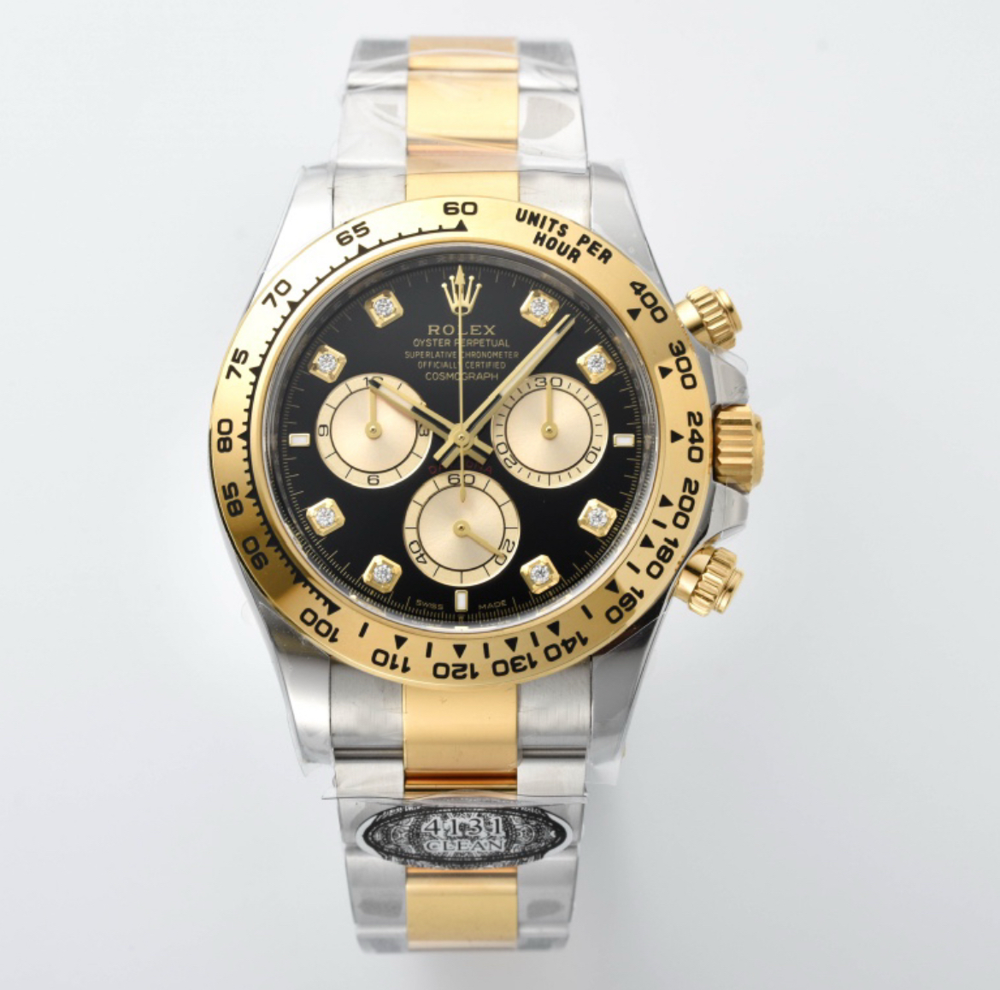
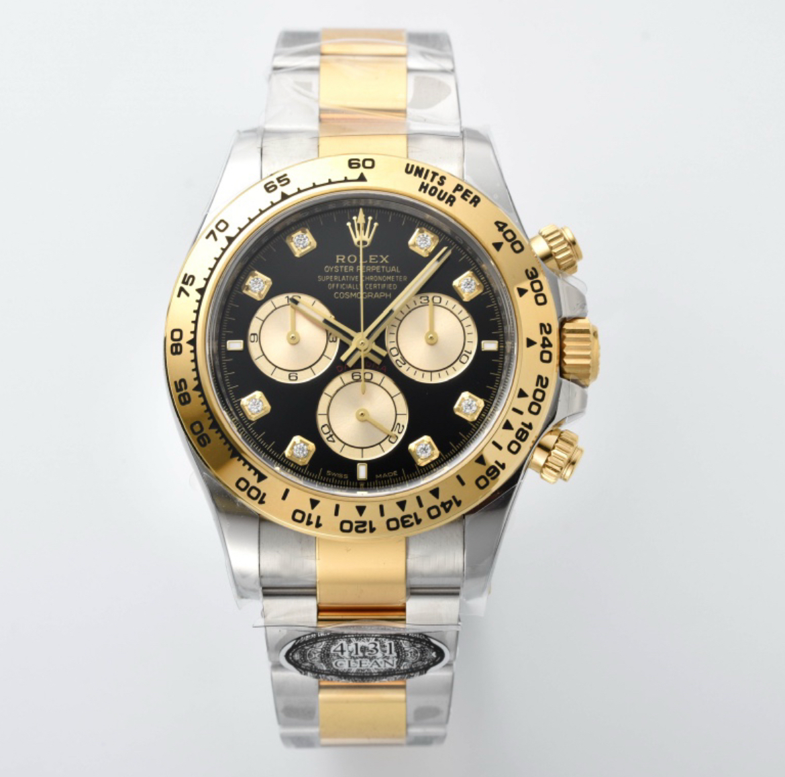

Hong Kong Elite Replica Watches: Top-Tier Precision
Welcome to the prestige of hong kong elite replica watches. Our Daytona, priced at 4900 HKD, exemplifies hong kong luxury replica watches. Crafted for enthusiasts of luxury replica watches hk, these timepieces deliver elite accuracy and style, leading the pack in top hk replica watches.
From our Hong Kong warehouse, we offer hong kong elite replica watches fast shipping and a 3-year warranty. Enjoy face-to-face delivery and free strap adjustments by our expert artisans. Our premium hk timepieces come with hk luxury watch replicas fast delivery for an elite experience.
We’re a trusted name in hong kong high end replicas, renowned for delivering best hk luxury replicas. Our luxury hk replica timepieces showcase elite craftsmanship, making us a top choice for hong kong premium watches. Contact us to join the elite.
Elite Features
Movement Accuracy: Matches 92% of hong kong luxury watch copies.
Bezel Durability: Outlasts 90% of premium replica watches hk.

 

"I’m Sophia, a 33-year-old lawyer from Central. My hk luxury replica timepieces arrived in 2 days—9 months later, the accuracy is elite. Best hong kong replica watch shop!"
"I’m Henry, a 45-year-old banker from Kowloon. The bezel is rock-solid—11 months of wear, still flawless!"
"I’m Mia, a 27-year-old stylist from Tsuen Wan. Free strap adjustment made it perfect—7 months strong!"